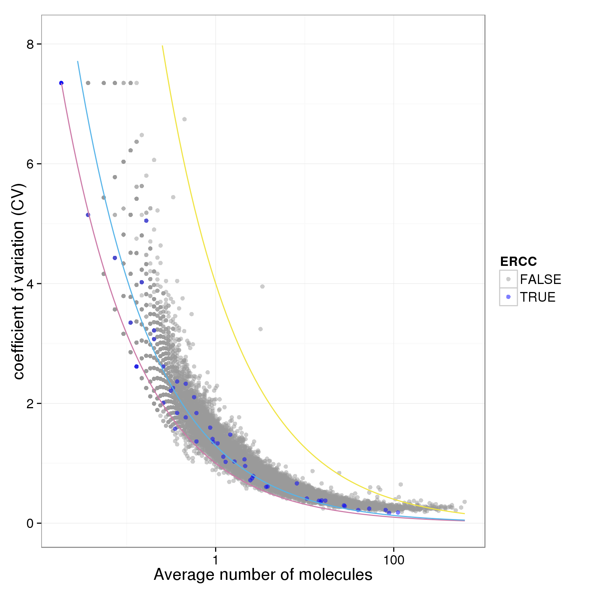

Identification of noisy genes
Po-Yuan Tung
2015-06-03
Last updated: 2015-06-15
Code version: 2e897b3168affe182f49a3e078a85a78858257bb
Input
library("dplyr")
library("ggplot2")
theme_set(theme_bw(base_size = 16))
library("edgeR")Summary counts from featureCounts. Created with gather-summary-counts.py.
summary_counts <- read.table("../data/summary-counts.txt", header = TRUE,
stringsAsFactors = FALSE)
summary_per_sample <- summary_counts %>%
filter(sickle == "quality-trimmed") %>%
select(-sickle) %>%
arrange(individual, batch, well, rmdup) %>%
as.data.frameInput annotation.
anno <- read.table("../data/annotation.txt", header = TRUE,
stringsAsFactors = FALSE)
head(anno) individual batch well sample_id
1 19098 1 A01 NA19098.1.A01
2 19098 1 A02 NA19098.1.A02
3 19098 1 A03 NA19098.1.A03
4 19098 1 A04 NA19098.1.A04
5 19098 1 A05 NA19098.1.A05
6 19098 1 A06 NA19098.1.A06Input read counts.
reads <- read.table("../data/reads.txt", header = TRUE,
stringsAsFactors = FALSE)Input molecule counts.
molecules <- read.table("../data/molecules.txt", header = TRUE,
stringsAsFactors = FALSE)Input single cell observational quality control data.
qc <- read.table("../data/qc-ipsc.txt", header = TRUE,
stringsAsFactors = FALSE)
head(qc) individual batch well cell_number concentration tra1.60
1 19098 1 A01 1 1.734785 1
2 19098 1 A02 1 1.723038 1
3 19098 1 A03 1 1.512786 1
4 19098 1 A04 1 1.347492 1
5 19098 1 A05 1 2.313047 1
6 19098 1 A06 1 2.056803 1Input list of single cells to keep based on qc.
goodcell <- read.table("../data/quality-single-cells.txt", header = TRUE,
stringsAsFactors = FALSE)
head(goodcell) NA19098.1.A01
1 NA19098.1.A02
2 NA19098.1.A05
3 NA19098.1.A06
4 NA19098.1.A07
5 NA19098.1.A08
6 NA19098.1.A10Remove bad quality cells
Remove cells with total reads < 2 millons
#reads per sample
summary_per_sample_reads <- summary_per_sample %>% filter(rmdup == "reads")
#create unmapped ratios
summary_per_sample_reads$unmapped.ratios <- summary_per_sample_reads[,9]/apply(summary_per_sample_reads[,5:13],1,sum)
#create total mapped reads
summary_per_sample_reads$total.mapped <- apply(summary_per_sample_reads[,5:8],1,sum)
#creat ERCC ratios
summary_per_sample_reads$ERCC.ratios <- apply(reads[grep("ERCC", rownames(reads)), ],2,sum)/apply(summary_per_sample_reads[,5:8],1,sum)
#remove bulk keep single cell
summary_per_sample_reads_single <- summary_per_sample_reads[summary_per_sample_reads$well!="bulk",]
#add cell number per well by merging qc file
summary_per_sample_reads_single_qc <- merge(summary_per_sample_reads_single,qc,by=c("individual","batch","well"))
#qc filter
summary_per_sample_reads_single_qc$qc_filter <- summary_per_sample_reads_single_qc$cell_number == 1 & summary_per_sample_reads_single_qc$total.mapped > 2 * 10^6
sum(summary_per_sample_reads_single_qc$qc_filter)[1] 632ggplot(summary_per_sample_reads_single_qc, aes(x = total.mapped , y = unmapped.ratios, col = qc_filter)) + geom_text(aes(label = cell_number))
ggplot(summary_per_sample_reads_single_qc, aes(x = total.mapped , y = ERCC.ratios, col = qc_filter)) + geom_text(aes(label = cell_number))
Total molecule number of ERCC
# molecules per sample
summary_per_sample_molecules <- summary_per_sample %>% filter(rmdup == "molecules")
# total ERCC molecule
summary_per_sample_molecules$total.ERCC.mol <- apply(molecules[grep("ERCC", rownames(reads)), ],2,sum)
# ERCC molecule ratio
summary_per_sample_molecules$ERCC.ratio.mol <- summary_per_sample_molecules$total.ERCC.mol/summary_per_sample_molecules$Assigned
# remove bulk keep single cell
summary_per_sample_molecules_single <- summary_per_sample_molecules[summary_per_sample_molecules$well!="bulk",]
plot(summary_per_sample_molecules_single$total.ERCC.mol)
# adjust total ERCC molecules of 19098 batch2
summary_per_sample_molecules_single$index_19098_2 <- (summary_per_sample_molecules_single$individual == "19098" & summary_per_sample_molecules_single$batch == "2")
# calculating the ratio of 19098 batch 2 to the rest
adjusted_ratio.mol <- mean(summary_per_sample_molecules_single$total.ERCC.mol[summary_per_sample_molecules_single$index_19098_2])/mean(summary_per_sample_molecules_single$total.ERCC[!summary_per_sample_molecules_single$index_19098_2])
adjusted_ratio.mol [1] 7.287311# adjusted total ERCC reads
summary_per_sample_molecules_single$adj.total.ERCC.mol <- summary_per_sample_molecules_single$total.ERCC.mol
summary_per_sample_molecules_single$adj.total.ERCC.mol[summary_per_sample_molecules_single$index_19098_2] <- summary_per_sample_molecules_single$adj.total.ERCC.mol[summary_per_sample_molecules_single$index_19098_2]/adjusted_ratio.mol
# adjusted ERCC ratios
summary_per_sample_molecules_single$adj.ERCC.ratios.mol <-
summary_per_sample_molecules_single$adj.total.ERCC.mol/summary_per_sample_molecules_single$Assigned
# add qc filter and cell number
summary_per_sample_molecules_single$qc_filter <- summary_per_sample_reads_single_qc$qc_filter
summary_per_sample_molecules_single$cell_number <- summary_per_sample_reads_single_qc$cell_number
ggplot(summary_per_sample_molecules_single, aes(x = Assigned, y = ERCC.ratio.mol, col = qc_filter)) + geom_text(aes(label = cell_number)) + facet_grid(individual ~ batch) + theme(axis.text.x = element_text(angle = 90, hjust = 0.9, vjust = 0.5))
ggplot(summary_per_sample_molecules_single, aes(x = Assigned, y = adj.ERCC.ratios.mol, col = qc_filter)) + geom_text(aes(label = cell_number)) + facet_grid(individual ~ batch) + theme(axis.text.x = element_text(angle = 90, hjust = 0.9, vjust = 0.5))
CV and mean
Looking at molecule
# remove molecules that are larger than 1024
rownames(molecules)[rowMeans(molecules) > 1024][1] "ENSG00000198712" "ENSG00000198938"molecules.new <- molecules [rowMeans(molecules) < 1024,]
dim(molecules)[1] 20419 873dim(molecules.new)[1] 20417 873# remove bulk
molecules_single <- molecules %>% select(-contains("bulk"))
# remove 1024 and greater
molecules_single <- molecules_single[apply(molecules_single,1,max) < 1024,]
# apply qc_filter
molecules_single_qc <- molecules_single[,summary_per_sample_reads_single_qc$qc_filter]
dim(molecules_single_qc)[1] 20396 632sample_name <- names(molecules_single_qc)
### create a function to compute the cv and mean of molecules
### input data is molecules_single_qc
### two parameters
### 1. filter: sellect for specifc individaul or batch
### 2. adj.19098.batch: flag to control if we want to adj the 19098 batch2 molecules numberes. default to not adj, meaning using the raw numbers
prep_molecules.cv.mean <- function(filter,adj.19098.batch2=0){
### generate the data of interest
data.in <- molecules_single_qc[,grepl(filter,sample_name)]
if(adj.19098.batch2 == 1){
#### find out which columns belong 19098 batch2
target.column <- sample_name[grep("19098.2",sample_name)]
#### find out ERCC rows
g <- rownames(data.in)
target.row <- g[grep("ERCC",g)]
#### replace the molecules numbers via dividing by adjusted_ratio.mol
data.in[target.row,target.column] <- (data.in[target.row,target.column])/adjusted_ratio.mol
}
if(adj.19098.batch2 == 2){
#### find out which columns belong 19098 batch2
#### remove 19098.2
data.in<- data.in[,!grepl("19098.2",sample_name)]
#### also need to take care of summary_per_sample_reads_single_qc
summary_per_sample_reads_single_qc <- summary_per_sample_reads_single_qc[!((summary_per_sample_reads_single_qc$individual==19098)&(summary_per_sample_reads_single_qc$batch==2)),]
}
if(adj.19098.batch2 == 3){
#### find out which columns belong 19098 batch2
target.column <- sample_name[grep("19098.2",sample_name)]
#### find out ERCC rows
g <- rownames(data.in)
target.row <- g[grep("ERCC",g)]
#### replace the molecules numbers via dividing by NA
data.in[target.row,target.column] <- NA
}
#correct for collision probability
molecules.crt <- -1024*log(1-data.in/1024)
# create a new dataset
molecules_single_qc_w_mean_cv <- molecules.crt
# add mean
molecules_single_qc_w_mean_cv$mean <- apply(molecules.crt, 1, function(x) mean(x,na.rm=TRUE) )
# add CV
molecules_single_qc_w_mean_cv$CV <- apply(molecules.crt, 1, function(x) sd(x,na.rm=TRUE) )/ apply(molecules.crt, 1, function(x) mean(x,na.rm=TRUE))
# add variance
molecules_single_qc_w_mean_cv$var <- apply(molecules.crt, 1, function(x) var(x,na.rm=TRUE) )
# remove non-expressed
molecules_single_qc_expressed <- molecules_single_qc_w_mean_cv[molecules_single_qc_w_mean_cv$mean >0,]
dim(molecules_single_qc_expressed)
# create a flag to ERCC
molecules_single_qc_expressed$ERCC <- grepl("ERCC",rownames(molecules_single_qc_expressed))
# add gene_name
molecules_single_qc_expressed$gene_name <- rownames(molecules_single_qc_expressed)
return(molecules_single_qc_expressed)
### end of prep.molecules.cv.mean function
}
molecules_single_qc_expressed <- prep_molecules.cv.mean(filter="19",adj.19098.batch2=0)
molecules_single_qc_expressed_adj <- prep_molecules.cv.mean(filter="19",adj.19098.batch2=1)
molecules_single_qc_expressed_rm <- prep_molecules.cv.mean(filter="19",adj.19098.batch2=2)
molecules_single_qc_expressed_rm_ERCC <- prep_molecules.cv.mean(filter="19",adj.19098.batch2=3)
# plot with color-blind-friendly palettes
cbPalette <- c("#999999", "#0000FF", "#56B4E9", "#009E73", "#F0E442", "#0072B2", "#D55E00", "#CC79A7")
ggplot(molecules_single_qc_expressed, aes(x = mean, y = CV, col = ERCC)) + geom_point(size = 2, alpha = 0.5) + scale_x_log10() + scale_colour_manual(values=cbPalette)
ggplot(molecules_single_qc_expressed_rm_ERCC, aes(x = mean, y = CV, col = ERCC)) + geom_point(size = 2, alpha = 0.5) + scale_x_log10() + scale_colour_manual(values=cbPalette)
### create molecule data by each individaul using the molecules_single_qc_expressed_rm_ERCC
## 19098
individual_19098_mean_CV <- prep_molecules.cv.mean(filter="19098",adj.19098.batch2 = 0)
ggplot(individual_19098_mean_CV, aes(x = mean, y = CV, col = ERCC)) + geom_point(size = 2, alpha = 0.5) + scale_x_log10() + scale_colour_manual(values=cbPalette)
# 19098 by batch
individual_19098.1_mean_CV <- prep_molecules.cv.mean(filter="19098.1",adj.19098.batch2 = 0)
individual_19098.2_mean_CV <- prep_molecules.cv.mean(filter="19098.2",adj.19098.batch2 = 1)
individual_19098.3_mean_CV <- prep_molecules.cv.mean(filter="19098.3",adj.19098.batch2 = 0)
## 19101
individual_19101_mean_CV <- prep_molecules.cv.mean(filter="19101",adj.19098.batch2 = 0)
ggplot(individual_19101_mean_CV, aes(x = mean, y = CV, col = ERCC)) + geom_point(size = 2, alpha = 0.5) + scale_x_log10() + scale_colour_manual(values=cbPalette)
# 19101 by batch
individual_19101.1_mean_CV <- prep_molecules.cv.mean(filter="19101.1",adj.19098.batch2 = 0)
individual_19101.2_mean_CV <- prep_molecules.cv.mean(filter="19101.2",adj.19098.batch2 = 0)
individual_19101.3_mean_CV <- prep_molecules.cv.mean(filter="19101.3",adj.19098.batch2 = 0)
## 19239
individual_19239_mean_CV <- prep_molecules.cv.mean(filter="19239",adj.19098.batch2 = 0)
ggplot(individual_19239_mean_CV, aes(x = mean, y = CV, col = ERCC)) + geom_point(size = 2, alpha = 0.5) + scale_x_log10() + scale_colour_manual(values=cbPalette)
# 19239 by batch
individual_19239.1_mean_CV <- prep_molecules.cv.mean(filter="19239.1",adj.19098.batch2 = 0)
individual_19239.2_mean_CV <- prep_molecules.cv.mean(filter="19239.2",adj.19098.batch2 = 0)
individual_19239.3_mean_CV <- prep_molecules.cv.mean(filter="19239.3",adj.19098.batch2 = 0)Looking at reads
# remove bulk
reads_single <- reads %>% select(-contains("bulk"))
# apply qc_filter
reads_single_qc <- reads_single[,summary_per_sample_reads_single_qc$qc_filter]
dim(reads_single_qc)[1] 20419 632sum(summary_per_sample_reads_single_qc$qc_filter)[1] 632# normalization
reads_single_qc_cpm <- cpm(reads_single_qc)
# create a new dataset
reads_single_qc_w_mean_cv <- data.frame(reads_single_qc_cpm)
sum(reads_single_qc_cpm!=reads_single_qc_w_mean_cv)[1] 0# add mean
reads_single_qc_w_mean_cv$mean <- apply(reads_single_qc_cpm, 1, mean)
# add CV
reads_single_qc_w_mean_cv$CV <- apply(reads_single_qc_cpm, 1, sd)/ apply(reads_single_qc_cpm, 1, mean)
# remove non-expressed
reads_single_qc_expressed <- reads_single_qc_w_mean_cv[reads_single_qc_w_mean_cv$mean >0,]
dim(reads_single_qc_expressed)[1] 17609 634# sellect ERCC
reads_single_qc_expressed$ERCC <- grepl("ERCC",rownames(reads_single_qc_expressed))
# plot with color-blind-friendly palettes
cbPalette <- c("#999999", "#0000FF", "#56B4E9", "#009E73", "#F0E442", "#0072B2", "#D55E00", "#CC79A7")
ggplot(reads_single_qc_expressed, aes(x = mean, y = CV, col = ERCC)) + geom_point(size = 2, alpha = 0.5) + scale_x_log10() + scale_colour_manual(values=cbPalette)
Poisson sucks!
### this function will plot the mean vs cv based on the ERCC molecules counts
### only need to specify the input dataset
### the inpute dataset needs to have mean, cv and ERCC flag
### make minipar global
plot.cv.and.mean <- function(data.in){
# model based on ERCC only
# need to have a ERCC flag on the data.in
molecules_single_qc_expressed_ERCC <- data.in[data.in$ERCC,]
# defnine poisson function on a log x scale
poisson.c <- function (x) {
(10^x)^(0.5)/(10^x)
}
# compute the lossy factor based on ERCC
#### use LS: first define the function of f, then find the minimum
#### dont use the points from ERCC.mol.mean < 0.1 to fit.
ERCC.mol.mean <- molecules_single_qc_expressed_ERCC$mean
ERCC.mol.CV <- molecules_single_qc_expressed_ERCC$CV
# compute the sum of square errors
target.fun <- function(f){
sum((ERCC.mol.CV[ERCC.mol.mean>0.1]- sqrt(1/(f*ERCC.mol.mean[ERCC.mol.mean>0.1])))^2)
}
# find out the minimum
ans <- nlminb(0.05,target.fun,lower=0.0000001,upper=1)
minipar <- ans$par
# use the minimum to create the lossy poisson
lossy.posson <- function (x) {
1/sqrt((10^x)*minipar)
}
# 4 s.d.
four.sd <- function (x) {
4*(10^x)^(0.5)/(10^x)
}
# 3.7 sd + 0.3
three.sd <- function (x) {
3.7*(10^x)^(0.5)/(10^(x))+0.3
}
ggplot(data.in, aes(x = mean, y = CV, col = ERCC)) + geom_point(size = 2, alpha = 0.5) + stat_function(fun= poisson.c, col= "#CC79A7") + stat_function(fun= four.sd, col= "#F0E442") + stat_function(fun= lossy.posson, col= "#56B4E9") + scale_x_log10() + ylim(0, max(data.in$CV)*1.1) + scale_colour_manual(values=cbPalette) + xlab("Average number of molecules") + ylab ("coefficient of variation (CV)")
}
plot.cv.and.mean(data.in=molecules_single_qc_expressed)Warning in loop_apply(n, do.ply): Removed 21 rows containing missing values
(geom_path).Warning in loop_apply(n, do.ply): Removed 7 rows containing missing values
(geom_path).
plot.cv.and.mean(data.in=molecules_single_qc_expressed_adj)Warning in loop_apply(n, do.ply): Removed 6 rows containing missing values
(geom_path).Warning in loop_apply(n, do.ply): Removed 26 rows containing missing values
(geom_path).Warning in loop_apply(n, do.ply): Removed 10 rows containing missing values
(geom_path).
plot.cv.and.mean(data.in=molecules_single_qc_expressed_rm)Warning in loop_apply(n, do.ply): Removed 21 rows containing missing values
(geom_path).Warning in loop_apply(n, do.ply): Removed 4 rows containing missing values
(geom_path).
plot.cv.and.mean(data.in=molecules_single_qc_expressed_rm_ERCC)Warning in loop_apply(n, do.ply): Removed 21 rows containing missing values
(geom_path).Warning in loop_apply(n, do.ply): Removed 4 rows containing missing values
(geom_path).
plot.cv.and.mean(data.in=individual_19098_mean_CV)Warning in loop_apply(n, do.ply): Removed 23 rows containing missing values
(geom_path).Warning in loop_apply(n, do.ply): Removed 6 rows containing missing values
(geom_path).
plot.cv.and.mean(data.in=individual_19098.1_mean_CV)Warning in loop_apply(n, do.ply): Removed 25 rows containing missing values
(geom_path).Warning in loop_apply(n, do.ply): Removed 4 rows containing missing values
(geom_path).
plot.cv.and.mean(data.in=individual_19098.2_mean_CV)Warning in loop_apply(n, do.ply): Removed 15 rows containing missing values
(geom_path).Warning in loop_apply(n, do.ply): Removed 37 rows containing missing values
(geom_path).Warning in loop_apply(n, do.ply): Removed 15 rows containing missing values
(geom_path).
plot.cv.and.mean(data.in=individual_19098.3_mean_CV)Warning in loop_apply(n, do.ply): Removed 25 rows containing missing values
(geom_path).Warning in loop_apply(n, do.ply): Removed 4 rows containing missing values
(geom_path).
plot.cv.and.mean(data.in=individual_19101_mean_CV)Warning in loop_apply(n, do.ply): Removed 23 rows containing missing values
(geom_path).Warning in loop_apply(n, do.ply): Removed 5 rows containing missing values
(geom_path).
plot.cv.and.mean(data.in=individual_19239_mean_CV)Warning in loop_apply(n, do.ply): Removed 22 rows containing missing values
(geom_path).Warning in loop_apply(n, do.ply): Removed 4 rows containing missing values
(geom_path).
### ignore the following code
ignore <- function(xxx){
# log plot
plot(log(molecules_single_qc_expressed$mean,base=2),log(molecules_single_qc_expressed$CV,base=2), col= "#999999", xlab="log2 Average number of molecules",ylab= "log2 coefficient of variation",ylim=c(-2,5),xlim=c(-10,10),pch=20)
points(log(molecules_single_qc_expressed_ERCC$mean,base=2),log(molecules_single_qc_expressed_ERCC$CV,base=2),col= "#0000FF" ,pch=20)
# add lossy poison
curve(-0.5*x-0.5*log(minipar,base=2),-100,6,add=TRUE,col="#56B4E9")
# add poisson
curve(-0.5*x,add=TRUE,col= "#CC79A7")
}noisy genes
### this function will identify the noisy gene based on 3.7 sd
### only need to specify the input dataset
### the inpute dataset needs to have mean and CV
noisy_gene <- function(data.in){
# larger than 4 sd
count.index <- (!is.na(data.in$mean))&(data.in$mean>1)
condi.index <- (data.in$CV > 4*(data.in$mean^(0.5))/data.in$mean)
sum(count.index&condi.index)
rownames(molecules_single_qc_expressed)[count.index&condi.index]
}
# noisy genes of all
noisy_gene_all <- noisy_gene(data.in=molecules_single_qc_expressed)
# noisy genes of each individaul
noisy_gene_19098 <- noisy_gene(data.in = individual_19098_mean_CV)
noisy_gene_19101 <- noisy_gene(data.in = individual_19101_mean_CV)
noisy_gene_19239 <- noisy_gene(data.in = individual_19239_mean_CV)
# noisy genes of each batch
noisy_gene_19098.1 <- noisy_gene(data.in = individual_19098.1_mean_CV)
noisy_gene_19098.2 <- noisy_gene(data.in = individual_19098.2_mean_CV)
noisy_gene_19098.3 <- noisy_gene(data.in = individual_19098.3_mean_CV)
table(c(noisy_gene_19098.1,noisy_gene_19098.2,noisy_gene_19098.3))
ENSG00000022840 ENSG00000043514 ENSG00000047249 ENSG00000049449
1 1 1 1
ENSG00000054938 ENSG00000059573 ENSG00000065621 ENSG00000072571
1 1 1 1
ENSG00000075975 ENSG00000080493 ENSG00000083937 ENSG00000085063
1 1 1 1
ENSG00000087053 ENSG00000087191 ENSG00000089163 ENSG00000089876
1 1 1 1
ENSG00000090530 ENSG00000091527 ENSG00000091592 ENSG00000092964
1 1 1 1
ENSG00000094631 ENSG00000100024 ENSG00000100139 ENSG00000100341
1 1 1 1
ENSG00000100884 ENSG00000101189 ENSG00000105258 ENSG00000109046
1 1 1 1
ENSG00000109184 ENSG00000110955 ENSG00000111432 ENSG00000111711
1 1 1 1
ENSG00000112033 ENSG00000112984 ENSG00000115902 ENSG00000118922
1 1 1 1
ENSG00000119487 ENSG00000120690 ENSG00000121486 ENSG00000124702
1 1 1 1
ENSG00000124780 ENSG00000126767 ENSG00000126890 ENSG00000129159
1 1 1 1
ENSG00000129354 ENSG00000130402 ENSG00000130584 ENSG00000131100
1 1 1 1
ENSG00000131188 ENSG00000132518 ENSG00000132744 ENSG00000132854
1 1 1 1
ENSG00000133112 ENSG00000133678 ENSG00000134369 ENSG00000136274
1 1 1 1
ENSG00000136280 ENSG00000137331 ENSG00000137343 ENSG00000137441
1 1 1 1
ENSG00000139173 ENSG00000139537 ENSG00000139631 ENSG00000140682
1 1 1 1
ENSG00000140740 ENSG00000140798 ENSG00000144749 ENSG00000145040
1 1 1 1
ENSG00000145331 ENSG00000145332 ENSG00000146122 ENSG00000148187
1 1 1 1
ENSG00000149380 ENSG00000149474 ENSG00000149634 ENSG00000149972
1 1 1 1
ENSG00000150051 ENSG00000151690 ENSG00000152443 ENSG00000154438
1 1 1 1
ENSG00000156885 ENSG00000156931 ENSG00000159063 ENSG00000162073
1 1 1 1
ENSG00000162687 ENSG00000163634 ENSG00000163755 ENSG00000164588
1 1 1 1
ENSG00000164627 ENSG00000164896 ENSG00000165650 ENSG00000166164
1 1 1 1
ENSG00000166363 ENSG00000166455 ENSG00000167186 ENSG00000167346
1 1 1 1
ENSG00000167523 ENSG00000167771 ENSG00000168701 ENSG00000168830
1 1 1 1
ENSG00000171793 ENSG00000172247 ENSG00000172733 ENSG00000172785
1 1 1 1
ENSG00000174886 ENSG00000174891 ENSG00000175334 ENSG00000176055
1 1 1 1
ENSG00000176399 ENSG00000180938 ENSG00000181965 ENSG00000181991
1 1 1 1
ENSG00000182158 ENSG00000182492 ENSG00000183396 ENSG00000183508
1 1 1 1
ENSG00000184205 ENSG00000184207 ENSG00000184307 ENSG00000184368
1 1 1 1
ENSG00000184949 ENSG00000185022 ENSG00000185104 ENSG00000185130
1 1 1 1
ENSG00000185739 ENSG00000186364 ENSG00000187049 ENSG00000187595
1 1 1 1
ENSG00000188393 ENSG00000196440 ENSG00000196715 ENSG00000197081
1 1 1 1
ENSG00000197429 ENSG00000197601 ENSG00000198286 ENSG00000198464
1 1 1 1
ENSG00000198815 ENSG00000203815 ENSG00000204183 ENSG00000204859
1 1 1 1
ENSG00000205078 ENSG00000206013 ENSG00000214597 ENSG00000232478
1 1 1 1
ENSG00000234465 ENSG00000239605 ENSG00000241935 ENSG00000243749
1 1 1 1
ERCC-00164
1 noisy_gene_19101.1 <- noisy_gene(data.in = individual_19101.1_mean_CV)
noisy_gene_19101.2 <- noisy_gene(data.in = individual_19101.2_mean_CV)
noisy_gene_19101.3 <- noisy_gene(data.in = individual_19101.3_mean_CV)
table(c(noisy_gene_19101.1,noisy_gene_19101.2,noisy_gene_19101.3))
ENSG00000004939 ENSG00000005700 ENSG00000012061 ENSG00000013523
1 1 1 1
ENSG00000016402 ENSG00000017621 ENSG00000018236 ENSG00000018699
1 1 1 1
ENSG00000038219 ENSG00000044012 ENSG00000046889 ENSG00000047621
1 1 1 1
ENSG00000049449 ENSG00000050405 ENSG00000050730 ENSG00000052126
1 1 1 1
ENSG00000053328 ENSG00000058056 ENSG00000058063 ENSG00000059145
1 1 1 1
ENSG00000059691 ENSG00000060709 ENSG00000064393 ENSG00000064419
1 1 1 1
ENSG00000065665 ENSG00000065989 ENSG00000066136 ENSG00000069812
1 1 1 1
ENSG00000070190 ENSG00000076770 ENSG00000077380 ENSG00000077549
1 1 1 1
ENSG00000079432 ENSG00000084072 ENSG00000085185 ENSG00000085465
1 1 1 1
ENSG00000085788 ENSG00000086289 ENSG00000087085 ENSG00000089820
1 1 1 1
ENSG00000092096 ENSG00000093183 ENSG00000095203 ENSG00000095906
1 1 1 1
ENSG00000099849 ENSG00000099960 ENSG00000100003 ENSG00000100075
1 1 1 1
ENSG00000100170 ENSG00000100221 ENSG00000100314 ENSG00000100341
1 1 1 1
ENSG00000101773 ENSG00000102595 ENSG00000103043 ENSG00000103067
1 1 1 1
ENSG00000103528 ENSG00000103544 ENSG00000104218 ENSG00000104371
1 1 1 1
ENSG00000104679 ENSG00000105227 ENSG00000105613 ENSG00000106809
1 1 1 1
ENSG00000107807 ENSG00000107815 ENSG00000108963 ENSG00000109911
1 1 1 1
ENSG00000110274 ENSG00000110881 ENSG00000111674 ENSG00000111816
1 1 1 1
ENSG00000111906 ENSG00000112357 ENSG00000112511 ENSG00000112699
1 1 1 1
ENSG00000112977 ENSG00000113263 ENSG00000113303 ENSG00000114331
1 1 1 1
ENSG00000115129 ENSG00000115457 ENSG00000115468 ENSG00000116017
1 1 1 1
ENSG00000116237 ENSG00000116678 ENSG00000116990 ENSG00000117013
1 1 1 1
ENSG00000117143 ENSG00000117152 ENSG00000118162 ENSG00000119686
1 1 1 1
ENSG00000120837 ENSG00000121570 ENSG00000121851 ENSG00000122386
2 1 1 1
ENSG00000122545 ENSG00000123104 ENSG00000123179 ENSG00000123473
1 1 1 1
ENSG00000124275 ENSG00000125149 ENSG00000125257 ENSG00000126860
1 1 1 1
ENSG00000127418 ENSG00000128159 ENSG00000128218 ENSG00000128610
1 1 1 1
ENSG00000129910 ENSG00000130589 ENSG00000131368 ENSG00000131373
1 1 1 1
ENSG00000131778 ENSG00000132305 ENSG00000133477 ENSG00000133816
1 1 1 1
ENSG00000134013 ENSG00000134072 ENSG00000134250 ENSG00000134326
1 1 1 1
ENSG00000134508 ENSG00000134853 ENSG00000134884 ENSG00000135373
1 1 1 1
ENSG00000136003 ENSG00000136243 ENSG00000136378 ENSG00000136541
1 1 1 1
ENSG00000136868 ENSG00000137054 ENSG00000137312 ENSG00000137672
1 1 1 1
ENSG00000138073 ENSG00000138131 ENSG00000138463 ENSG00000138796
1 1 1 1
ENSG00000139155 ENSG00000139546 ENSG00000139625 ENSG00000140545
1 1 1 1
ENSG00000140749 ENSG00000140750 ENSG00000141404 ENSG00000141934
1 1 1 1
ENSG00000142065 ENSG00000142698 ENSG00000143127 ENSG00000143164
1 1 1 1
ENSG00000144642 ENSG00000144840 ENSG00000144962 ENSG00000145217
1 1 1 1
ENSG00000145685 ENSG00000145882 ENSG00000145920 ENSG00000146049
1 1 1 2
ENSG00000146151 ENSG00000146535 ENSG00000146859 ENSG00000147133
1 1 1 1
ENSG00000147274 ENSG00000147316 ENSG00000147382 ENSG00000147383
1 1 1 1
ENSG00000147852 ENSG00000149541 ENSG00000149591 ENSG00000150768
1 2 1 1
ENSG00000151465 ENSG00000151948 ENSG00000152253 ENSG00000152601
1 1 1 1
ENSG00000152760 ENSG00000152778 ENSG00000153201 ENSG00000153551
1 1 1 1
ENSG00000154099 ENSG00000154864 ENSG00000155275 ENSG00000155897
1 1 1 1
ENSG00000155903 ENSG00000156222 ENSG00000156471 ENSG00000156804
1 1 1 1
ENSG00000157106 ENSG00000158815 ENSG00000159261 ENSG00000159658
1 1 1 1
ENSG00000159720 ENSG00000159873 ENSG00000159885 ENSG00000159905
1 1 1 1
ENSG00000161204 ENSG00000161798 ENSG00000162543 ENSG00000162552
1 1 1 1
ENSG00000163359 ENSG00000163386 ENSG00000163430 ENSG00000163590
1 1 1 1
ENSG00000163755 ENSG00000164002 ENSG00000164100 ENSG00000164142
1 1 1 1
ENSG00000164405 ENSG00000165140 ENSG00000165671 ENSG00000165891
1 1 1 1
ENSG00000165966 ENSG00000166037 ENSG00000166086 ENSG00000166439
1 1 1 1
ENSG00000166509 ENSG00000166747 ENSG00000166922 ENSG00000167077
1 1 1 1
ENSG00000167178 ENSG00000167264 ENSG00000167286 ENSG00000167470
1 1 1 1
ENSG00000167524 ENSG00000167700 ENSG00000167851 ENSG00000168807
1 1 1 1
ENSG00000168830 ENSG00000168872 ENSG00000169306 ENSG00000169435
1 1 1 1
ENSG00000169499 ENSG00000169840 ENSG00000169871 ENSG00000169964
1 1 1 1
ENSG00000170214 ENSG00000170325 ENSG00000170915 ENSG00000170925
1 1 1 1
ENSG00000170950 ENSG00000171055 ENSG00000171307 ENSG00000171310
1 1 1 2
ENSG00000171773 ENSG00000172869 ENSG00000173213 ENSG00000173269
1 1 1 1
ENSG00000173818 ENSG00000173889 ENSG00000173898 ENSG00000173988
1 1 1 1
ENSG00000174473 ENSG00000174586 ENSG00000175416 ENSG00000175471
1 1 1 1
ENSG00000175564 ENSG00000175591 ENSG00000176204 ENSG00000176256
1 1 1 1
ENSG00000176371 ENSG00000176485 ENSG00000176907 ENSG00000177455
1 2 1 1
ENSG00000177947 ENSG00000177951 ENSG00000178685 ENSG00000178795
1 1 1 1
ENSG00000178804 ENSG00000179152 ENSG00000179636 ENSG00000180138
1 1 1 1
ENSG00000180251 ENSG00000180638 ENSG00000181035 ENSG00000181896
1 1 1 1
ENSG00000181924 ENSG00000182481 ENSG00000182572 ENSG00000182747
1 1 1 1
ENSG00000183747 ENSG00000183941 ENSG00000184465 ENSG00000184486
1 1 1 1
ENSG00000184719 ENSG00000185049 ENSG00000185056 ENSG00000185201
1 1 1 1
ENSG00000185652 ENSG00000186111 ENSG00000186160 ENSG00000186184
1 1 1 1
ENSG00000186275 ENSG00000186409 ENSG00000187522 ENSG00000187566
1 1 1 1
ENSG00000187624 ENSG00000188167 ENSG00000188211 ENSG00000196159
1 1 1 1
ENSG00000196361 ENSG00000196591 ENSG00000196639 ENSG00000196653
1 1 1 1
ENSG00000196655 ENSG00000196796 ENSG00000197134 ENSG00000197256
1 1 1 1
ENSG00000197579 ENSG00000197601 ENSG00000197818 ENSG00000197903
1 1 1 1
ENSG00000198612 ENSG00000198642 ENSG00000198836 ENSG00000198860
1 1 1 1
ENSG00000203879 ENSG00000203965 ENSG00000204231 ENSG00000204370
1 1 1 1
ENSG00000204775 ENSG00000204859 ENSG00000204952 ENSG00000204977
1 1 1 1
ENSG00000205208 ENSG00000213714 ENSG00000213889 ENSG00000214367
1 1 1 1
ENSG00000214562 ENSG00000215788 ENSG00000219435 ENSG00000221821
1 1 1 1
ENSG00000222014 ENSG00000225932 ENSG00000228696 ENSG00000232070
1 1 1 1
ENSG00000235961 ENSG00000237136 ENSG00000241852 ENSG00000241935
1 1 1 1
ENSG00000243716 ENSG00000244486 ENSG00000249109 ENSG00000249853
1 1 1 1
ENSG00000250510 ENSG00000254206 ENSG00000255384 ENSG00000255524
1 1 1 1
ENSG00000255748 ENSG00000258053 ENSG00000261221 ENSG00000261787
1 1 1 1
ENSG00000265817 ENSG00000267106 ENSG00000269360 ERCC-00104
1 1 1 1
ERCC-00116
1 noisy_gene_19239.1 <- noisy_gene(data.in = individual_19239.1_mean_CV)
noisy_gene_19239.2 <- noisy_gene(data.in = individual_19239.2_mean_CV)
noisy_gene_19239.3 <- noisy_gene(data.in = individual_19239.3_mean_CV)
table(c(noisy_gene_19239.1,noisy_gene_19239.2,noisy_gene_19239.3))
ENSG00000000419 ENSG00000014824 ENSG00000041357 ENSG00000043514
1 1 1 1
ENSG00000054148 ENSG00000064999 ENSG00000066032 ENSG00000070729
1 1 1 2
ENSG00000077942 ENSG00000082269 ENSG00000084073 ENSG00000089351
1 1 1 1
ENSG00000093009 ENSG00000099381 ENSG00000100385 ENSG00000101079
1 1 1 1
ENSG00000101405 ENSG00000102125 ENSG00000103051 ENSG00000103274
1 1 1 1
ENSG00000105227 ENSG00000108001 ENSG00000108219 ENSG00000111145
1 1 1 1
ENSG00000111305 ENSG00000113578 ENSG00000113621 ENSG00000114686
1 1 1 1
ENSG00000117481 ENSG00000118420 ENSG00000118946 ENSG00000120903
1 1 1 1
ENSG00000123815 ENSG00000124702 ENSG00000129675 ENSG00000129991
1 1 1 1
ENSG00000130783 ENSG00000130943 ENSG00000131626 ENSG00000133124
1 1 1 1
ENSG00000133422 ENSG00000133488 ENSG00000134121 ENSG00000134333
1 1 1 1
ENSG00000134986 ENSG00000135596 ENSG00000135722 ENSG00000136881
1 1 1 1
ENSG00000137259 ENSG00000138180 ENSG00000138669 ENSG00000139194
1 1 1 1
ENSG00000139620 ENSG00000140853 ENSG00000141837 ENSG00000142856
1 1 1 1
ENSG00000144452 ENSG00000145088 ENSG00000146834 ENSG00000149485
1 1 1 1
ENSG00000149516 ENSG00000150457 ENSG00000150471 ENSG00000152977
1 1 1 1
ENSG00000153064 ENSG00000153317 ENSG00000154079 ENSG00000156709
1 1 1 1
ENSG00000157349 ENSG00000160392 ENSG00000161904 ENSG00000163935
1 1 1 1
ENSG00000163945 ENSG00000164924 ENSG00000165240 ENSG00000165632
1 1 1 1
ENSG00000166405 ENSG00000167011 ENSG00000168038 ENSG00000169688
1 1 1 1
ENSG00000169891 ENSG00000170160 ENSG00000170315 ENSG00000172062
1 1 1 1
ENSG00000172845 ENSG00000172935 ENSG00000172969 ENSG00000173281
1 1 1 1
ENSG00000173436 ENSG00000175505 ENSG00000176049 ENSG00000176597
1 1 1 1
ENSG00000176769 ENSG00000178104 ENSG00000179119 ENSG00000179344
1 1 1 1
ENSG00000180834 ENSG00000180988 ENSG00000181143 ENSG00000181220
1 1 1 1
ENSG00000182261 ENSG00000182782 ENSG00000183751 ENSG00000183775
1 1 1 1
ENSG00000185808 ENSG00000185838 ENSG00000187079 ENSG00000187566
1 1 1 1
ENSG00000187601 ENSG00000197430 ENSG00000203663 ENSG00000204351
1 1 1 1
ENSG00000211455 ENSG00000213523 ENSG00000215788 ENSG00000232258
1 1 1 1
ENSG00000243566 ENSG00000250588 ENSG00000253719 ENSG00000256188
1 1 1 1
ENSG00000268172 ENSG00000268397 ENSG00000269089 ERCC-00043
1 1 1 1
ERCC-00053
1 variation between individuals
# overall variation is the sum of inter- and intra- individual variation
# creat a table with all the variation
table_variance <- molecules_single_qc_expressed[,c("gene_name","mean","var","ERCC")]
names(table_variance) <- c("gene_name","mean_all","variance_all","ERCC")
merge_variance <- function(data.base,data.merge,post.name){
data.merge <- data.merge[,c("gene_name","mean","var")]
names(data.merge) <- c("gene_name",paste(c("mean","var"),post.name,sep=""))
merge(data.base,data.merge,by="gene_name",all.x=TRUE)
}
table_variance <- merge_variance(data.base=table_variance,data.merge=individual_19098_mean_CV,post.name="_19098")
table_variance <- merge_variance(data.base=table_variance,data.merge=individual_19101_mean_CV,post.name="_19101")
table_variance <- merge_variance(data.base=table_variance,data.merge=individual_19239_mean_CV,post.name="_19239")
# keep non-missing across the table
table_variance <- table_variance[apply(table_variance,1,function(x) sum(is.na(x)))==0,]
# number of cell
number.of.cell.all <- sum(grepl("19",sample_name))
number.of.cell.19098 <- sum(grepl("19098",sample_name))
number.of.cell.19101 <- sum(grepl("19101",sample_name))
number.of.cell.19239 <- sum(grepl("19239",sample_name))
# compute inter individual variance
table_variance$between_indi_var <- (table_variance$variance_all*(number.of.cell.all -1) -
table_variance$var_19098 *(number.of.cell.19098 -1) -
table_variance$var_19101 *(number.of.cell.19101 -1) -
table_variance$var_19239 *(number.of.cell.19239 -1) ) /
(number.of.cell.all -3)
# plot overall variance vs inter-individaul variance
plot(table_variance$variance_all,table_variance$between_indi_var)
# plot ratio of inter-individual variance
plot(table_variance$between_indi_var/table_variance$variance_all)
abline(h=0.5,col=2)
# identify genes that are noisy across all cells and also with a certain level of inter-individual variance
whatever_list <- table_variance[(table_variance$between_indi_var/table_variance$variance_all) > 0.35,][,1]
whatever_list[whatever_list %in% noisy_gene_all][1] "ENSG00000069275" "ENSG00000088305" "ENSG00000112306" "ENSG00000117724"
[5] "ENSG00000163041" "ENSG00000166426" "ENSG00000185088" "ENSG00000256618"Session information
sessionInfo()R version 3.2.0 (2015-04-16)
Platform: x86_64-unknown-linux-gnu (64-bit)
locale:
[1] LC_CTYPE=en_US.UTF-8 LC_NUMERIC=C
[3] LC_TIME=en_US.UTF-8 LC_COLLATE=en_US.UTF-8
[5] LC_MONETARY=en_US.UTF-8 LC_MESSAGES=en_US.UTF-8
[7] LC_PAPER=en_US.UTF-8 LC_NAME=C
[9] LC_ADDRESS=C LC_TELEPHONE=C
[11] LC_MEASUREMENT=en_US.UTF-8 LC_IDENTIFICATION=C
attached base packages:
[1] stats graphics grDevices utils datasets methods base
other attached packages:
[1] edgeR_3.10.2 limma_3.24.9 ggplot2_1.0.1 dplyr_0.4.1 knitr_1.10.5
loaded via a namespace (and not attached):
[1] Rcpp_0.11.6 magrittr_1.5 MASS_7.3-40 munsell_0.4.2
[5] colorspace_1.2-6 stringr_1.0.0 plyr_1.8.2 tools_3.2.0
[9] parallel_3.2.0 grid_3.2.0 gtable_0.1.2 DBI_0.3.1
[13] htmltools_0.2.6 lazyeval_0.1.10 yaml_2.1.13 assertthat_0.1
[17] digest_0.6.8 reshape2_1.4.1 formatR_1.2 evaluate_0.7
[21] rmarkdown_0.6.1 labeling_0.3 stringi_0.4-1 scales_0.2.4
[25] proto_0.3-10